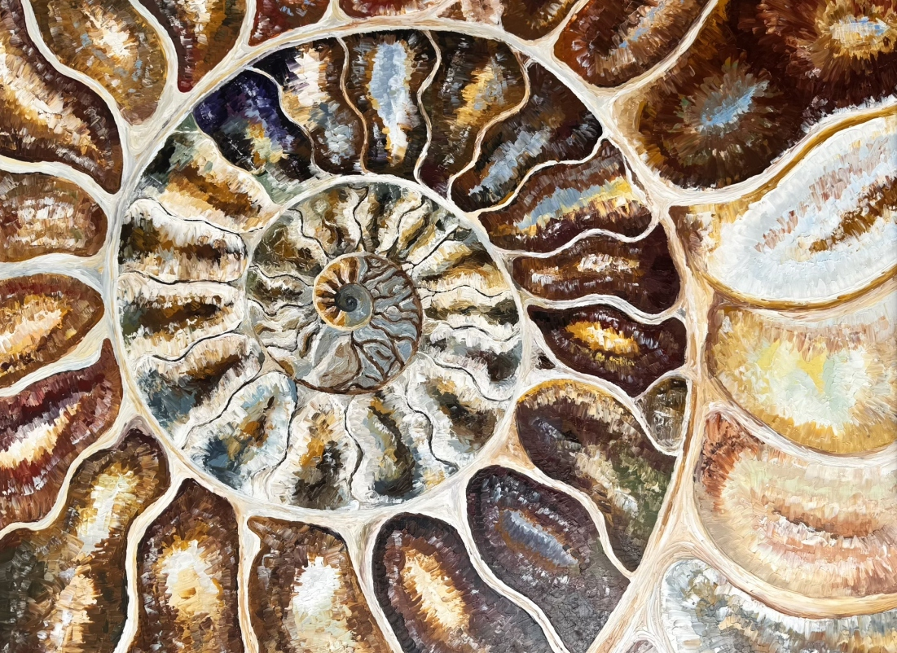
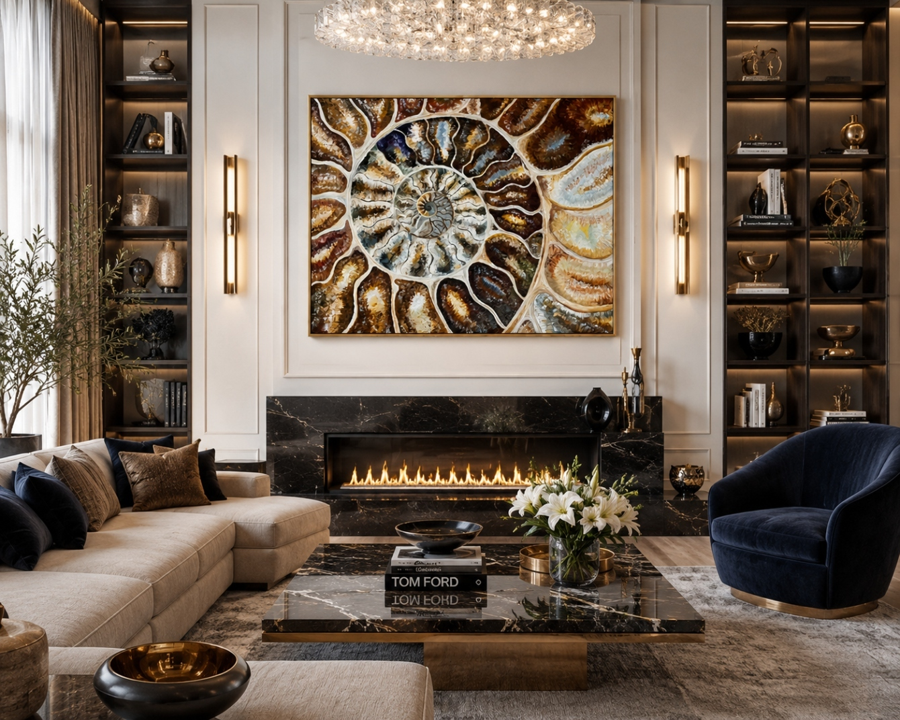
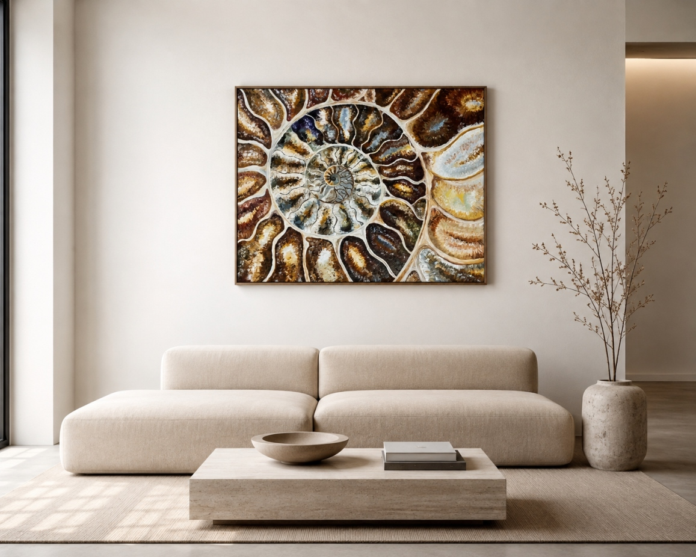

Холст на подрамнике, Лён
Масло
100 х 80 см.
Картина предлагает не просто смотреть на изображение, а погружаться в него.
Глубина раскрывается постепенно. Сначала взгляд воспринимает целостную форму, затем начинает следовать за спиралью, погружаясь всё глубже — от внешнего пространства к центру, от видимого к невидимому, от материи к смыслу.
Эта картина — путешествие внутрь себя, где цикличность времени становится пространством для расширения сознания, а глубина восприятия помогает увидеть суть происходящего.


Цикличность здесь не означает повторение. Каждый виток похож на предыдущий, но никогда не является его точной копией. Время возвращает нас к знакомым состояниям, однако каждый раз мы видим их уже из другой точки — с другой глубиной, другим опытом и другим взглядом.
Как раковина аммонита хранит следы всех предыдущих витков роста, так и человек несёт в себе опыт прошлого, который формирует его настоящее и открывает путь в будущее.
Эта работа приглашает замедлиться и почувствовать: время не движется только вперёд — оно разворачивается по спирали. Мы возвращаемся к похожим событиям, но каждый раз воспринимаем их глубже, потому что изменились сами.
